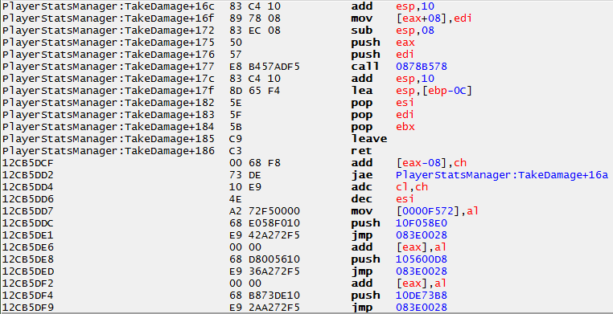

Mono Features
| This entry needs a lot of work. Please contribute if you can. Check this page to see if there are some suggestions for adding to Tutorial:Mono:Basic. |
So what are the Cheat Engine mono features?
- What is Mono?
- Mono is a free and open-source project. Created to build an ECMA (European Computer Manufacturers Association) standard-compliant .NET Framework compatible set of tools. Including a C# compiler and a Common Language Runtime with just-in-time (JIT) compilation.
- Side Note: The logo of Mono is a stylized monkey's face, mono being Spanish for monkey.
- Mono is a free and open-source project. Created to build an ECMA (European Computer Manufacturers Association) standard-compliant .NET Framework compatible set of tools. Including a C# compiler and a Common Language Runtime with just-in-time (JIT) compilation.
The Cheat Engine Mono feature are basically tools to help in Mono games. They can offer a different way to create and/or use cheats.
Let's setup infinite health in a Mono game.
I'll be using Cuphead.
Contents
Attaching to the process
So if you attach to a Mono game then Cheat Engine initializes the Mono features and there will be a new Mono menu item in the Cheat Engine main form. But you'll notice if you use openProcess in some Lua script, the Mono menu item doesn't show up. With Mono we want to us mono_OpenProcess to open the process or use mono_initialize to initialize the Mono features. The main thing to note is it takes a process ID (number), not a process name (string). Then we just need to use LaunchMonoDataCollector to activate the Mono features, it needs to be called after attaching to the process (after the Mono features are initialized).
--[============================================================[
Process : Cuphead.exe
Game Version : 5.6.2.10718
CE Version : 6.7
]============================================================]--
PROCESS_NAME = 'Cuphead.exe'
GAME_TITLE = 'Cuphead'
-- GAME_VERSION = '5.6.2.10718'
local autoAttachTimerInterval = 100
local autoAttachTimerTicks = 0
local autoAttachTimerTickMax = 5000
local autoAttachTimer = nil
local function autoAttachTimer_tick(timer)
if autoAttachTimerTickMax > 0 and autoAttachTimerTicks >= autoAttachTimerTickMax then
timer.destroy()
end
if getProcessIDFromProcessName(PROCESS_NAME) ~= nil then
timer.destroy()
--openProcess(PROCESS_NAME)
mono_OpenProcess(getProcessIDFromProcessName(PROCESS_NAME))
local InjectedMono = LaunchMonoDataCollector()
if InjectedMono and InjectedMono ~= 0 then
print(string.format('Mono Features Enabled: %X', InjectedMono))
end
end
autoAttachTimerTicks = autoAttachTimerTicks + 1
end
autoAttachTimer = createTimer(MainForm)
autoAttachTimer.Interval = autoAttachTimerInterval
autoAttachTimer.OnTimer = autoAttachTimer_tick
Or We could just use an Auto Assembler script and nest other scripts under it, and we would only need to check for process and initialize the Mono features.
[ENABLE]
{$lua}
if syntaxcheck then return end
if process and readInteger(process) ~= 0 then
mono_initialize()
LaunchMonoDataCollector()
else
local msg = 'No process detected.'
print(msg)
error(msg)
end
{$asm}
[DISABLE]
Working with Mono in scripts
So let's say we already found health with traditional value scanning.
If you have the Mono features enabled and setup an injection script then you will
see addresses like this "PlayerStatsManager:TakeDamage+ABC" instead of just a game plus offset address.
{kind=link}
So if we setup a script we can use the Mono address to make if more robust to deal with game updates better.
{$STRICT}
define(bytes,89 47 60)
////
//// ------------------------------ ENABLE ------------------------------
[ENABLE]
assert(PlayerStatsManager:TakeDamage+8A, bytes)
PlayerStatsManager:TakeDamage+8A:
nop
nop
nop
////
//// ------------------------------ DISABLE ------------------------------
[DISABLE]
PlayerStatsManager:TakeDamage+8A:
db bytes
// mov [edi+60],eax
But if we try to enable this script before the player takes damage, then you will find it won't enable. So let's fix that.
So fist we need to understand why scripts using Mono addresses don't enable before some given action. Well in short, Mono uses a JIT compiler.
- Just-in-time (JIT) compilation (a.k.a.: dynamic translation or run-time compilation), involves compilation during execution of a program (at run time) rather than prior to execution.
So to get the game to JIT (compile) the code we need to preform some action, for the above code we have to take damage. So how do we JIT the code, we can use mono_findMethod with mono_compile_method in the scripts.
JIT the method
You can JIT a method in the Mono Dissect Form by right clicking on a selected method.
{kind=link}
This will JIT the method and open the memory viewer at the methods start.
{kind=link}
Scripted JITting
Or we can setup a script to JIT the method.
{$STRICT}
define(bytes,89 47 60)
////
//// ------------------------------ ENABLE ------------------------------
[ENABLE]
{$lua}
if syntaxcheck then return end
if LaunchMonoDataCollector() ~= 0 then
local mId = mono_findMethod('Assembly-CSharp', 'PlayerStatsManager', 'TakeDamage')
--local mId = mono_findMethod('', 'PlayerStatsManager', 'TakeDamage') ---- This also works
mono_compile_method(mId)
end
{$asm}
assert(PlayerStatsManager:TakeDamage+8A, bytes)
PlayerStatsManager:TakeDamage+8A:
nop
nop
nop
////
//// ------------------------------ DISABLE ------------------------------
[DISABLE]
PlayerStatsManager:TakeDamage+8A:
db bytes
// mov [edi+60],eax
With this we can just enable the script after the Mono features have been enabled.
Make method only return
We could also try to just make the method return with out doing any thing.

{kind=link}
{kind=link}
{$STRICT}
define(bytes,55)
////
//// ------------------------------ ENABLE ------------------------------
[ENABLE]
{$lua}
if syntaxcheck then return end
if LaunchMonoDataCollector() ~= 0 then
local mId = mono_findMethod('Assembly-CSharp', 'PlayerStatsManager', 'TakeDamage')
--local mId = mono_findMethod('', 'PlayerStatsManager', 'TakeDamage') ---- This also works
mono_compile_method(mId)
end
{$asm}
assert(PlayerStatsManager:TakeDamage, bytes)
PlayerStatsManager:TakeDamage:
ret
////
//// ------------------------------ DISABLE ------------------------------
[DISABLE]
PlayerStatsManager:TakeDamage:
db bytes
// push ebp
Finding the Namespace
We can use mono_getJitInfo with mono_method_getClass in the Lua Engine to get the Namespace.
local mID = mono_getJitInfo(getAddress('PlayerStatsManager:TakeDamage')).method
local cID = mono_method_getClass(mID)
print('Namespace: ', '"' .. mono_class_getNamespace(cID) .. '"')
But this returns an empty Namespace, and it turns out mono_findMethod will tend to work with an empty Namespace.
- Note: Most stuff in Mono games will be in the Assembly-CSharp Namespace.